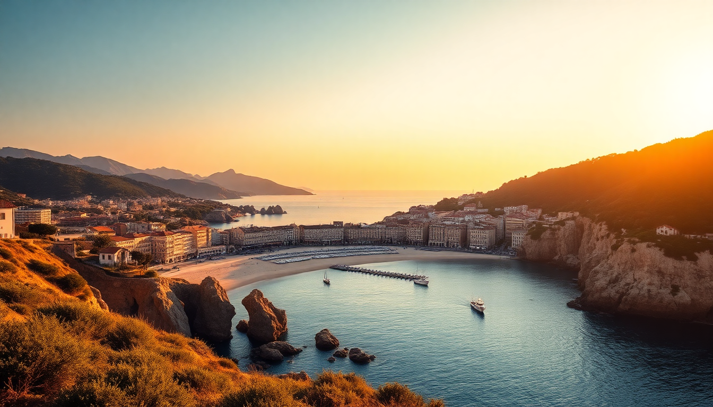

Best Beaches in France: Corsica, Riviera & Brittany

I’ve spent the last three summers bouncing between France’s three most distinct coastlines—Corsica’s wild coves, the Riviera’s glitzy pebbles, and Brittany’s rugged granite slabs. Each one feels like a different country. Here’s what I actually found worth your time (and what you can skip).
What makes Corsica’s beaches different from the mainland?
Corsica’s coastline is a mix of white sand and turquoise water that rivals the Caribbean, but with a serious hike-or-boat penalty to reach the best spots. The island’s interior mountains drop straight into the sea, so many beaches are tucked into deep coves accessible only on foot or by water taxi.
I spent three days based in Porto-Vecchio to hit the south. Palombaggia is the postcard beach—fine sand, shallow entry, clusters of umbrella pines for shade. It gets packed by 10 a.m., so I went at 7:30 a.m. and had it mostly to myself for two hours. Santa Giulia is more family-friendly but felt a bit resort-tame for my taste.
- Rondinara — a near-perfect horseshoe bay. Snorkeling is decent on the left side where the rocks start.
- Saleccia — on the desert coast near Saint-Florent. You need a 4x4 or a boat from Saint-Florent harbor. We took the ferry from Île Rousse instead, less hassle.
- Plage de l’Arinella — a quiet spot near Calvi. No facilities, just pebbles and clear water. Bring your own snacks.
Are Nice’s beaches worth it, or just crowded pebbles?
Nice’s beaches are pebbles, not sand. That’s the first thing to know. The Promenade des Anglais runs the whole stretch, and the public beaches are free but packed shoulder-to-shoulder in July. I found the water clean and warm, but lying on fist-sized stones gets old fast.
I rented a chair and mat at Blue Beach one day—€25 for a lounger, towel service, and a waiter who brought rosé. Worth it for the comfort, but the vibe is more see-and-be-seen than swim-and-relax. If you want actual sand, you have to head east to Villefranche-sur-Mer (15 minutes by bus from Nice’s Gare Routière). That beach is sand, shallow, and backed by pastel houses.
- Plage Publique des Ponchettes — free, central, but the pebbles are brutal. Bring a thick mat.
- Plage de la Réserve — a bit quieter, near the port. Good for a midday dip if you’re exploring old town.
- Coco Beach — a tiny cove past the port. Mostly locals. No amenities, but the water is clearer than the main strip.
Which Brittany beaches should you prioritize for wild scenery?
Brittany’s beaches aren’t for sunbathing—they’re for walking, wind, and dramatic tides that reveal rock pools twice a day. I drove the Côte de Granit Rose near Perros-Guirec and found the most striking coastline I’ve seen in France. The sand is pale and coarse, the water is cold (14°C in June), and the granite boulders are literally pink.
Plage de Trestraou is the main beach in Perros-Guirec. It’s wide, backed by a promenade with crêperies, and the water is swimmable if you’re tough. I preferred Plage de Saint-Guirec—smaller, framed by pink rocks, and a 20-minute walk from the parking lot. Low tide reveals a sandy floor that turns into a tidal island.
- Plage de l’Île Grande — accessed via a footbridge at low tide. Great for exploring rock pools with kids.
- Plage de la Mine d’Or — near Pénestin in southern Brittany. Golden sand, cliffs, and a calm bay. Less crowded than the north coast.
- Plage de Morgat — in the Crozon Peninsula. Sheltered cove with turquoise water that feels almost Mediterranean. Best in September when the wind drops.
When is the best time to visit each coastline?
Corsica peaks in July and August—water hits 26°C, but crowds are brutal. I went in mid-June and had warm water and half-empty beaches. September is even better: water stays warm, and accommodation in Porto-Vecchio drops by 40%.
Nice is a year-round destination, but beach season runs May to October. July and August are shoulder-to-shoulder. I’d pick late May or early June for comfortable water temps (around 20°C) without the crowds. October can still hit 22°C air temp, but the water cools fast.
Brittany is best in June and September. July and August bring rain and fog as often as sun. I got three straight days of drizzle in Perros-Guirec in August. June gave me clear skies and manageable wind. Water is always cold—don’t expect a swim longer than 15 minutes without a wetsuit.
Where should you stay to access the best beaches?
In Corsica, I based myself at Hotel Casadelmar in Porto-Vecchio. It’s a splurge—rooms start at €350—but the infinity pool overlooks the bay and the breakfast spread includes fresh fig jam and brocciu cheese. For budget, Hotel Les Roches Blanches in Calvi has decent rooms and a private beach cove.
On the Riviera, I stayed at Hotel La Pérouse in Nice. It’s carved into the cliff below the castle hill, with a private elevator down to the pebble beach. Rooms are small but the terrace views over the Baie des Anges are worth it. For a cheaper option, Villa Rivoli in Villefranche-sur-Mer has simple rooms and is a two-minute walk from the sand.
In Brittany, I rented a gîte near Ploumanac’h through Gîtes de France—€600 for a week in a stone cottage with a garden. For a hotel, Le Sphinx in Perros-Guirec is old-school but has direct beach access and a solid seafood restaurant downstairs.
What are the biggest tourist traps to avoid?
On Corsica, avoid the beach clubs in Calvi that charge €40 for a sunbed and serve mediocre cocktails. The water is the same everywhere. Also skip the boat tour from Ajaccio that crams 50 people onto a zodiac—you’ll spend more time queuing than swimming.
In Nice, don’t eat at the beachfront restaurants on the Promenade des Anglais. I paid €22 for a sad Niçoise salad at Le Galet. Walk two blocks inland to Bistrot d’Antoine on Rue de la Préfecture for half the price and double the quality.
In Brittany, the crêperies on Plage de Trestraou are tourist traps. Overpriced galettes and soggy crêpes. Walk 10 minutes to Crêperie du Centre in Perros-Guirec town—buckwheat galettes with local sausage and cider for €12.
FAQ
Is it safe to swim at all these beaches? Yes, but pay attention to flags. Corsica’s coves can have sudden undertows—stick to beaches with lifeguards in July and August. Nice’s beaches are generally safe, but the pebbles make entry slippery. Brittany has strong tidal currents; always check tide times before swimming at Plage de l’Île Grande or Morgat.
Do I need a car to reach the best beaches? In Corsica and Brittany, yes. Public buses run to main beaches like Palombaggia and Trestraou, but the remote coves require a car or boat. On the Riviera, the train from Nice to Villefranche-sur-Mer is frequent and cheap (€2 each way), so you can skip the car.
Can I visit all three coastlines in one trip? Technically yes, but I wouldn’t. Corsica is a flight from Nice (45 minutes) or a ferry from Toulon (5 hours). Brittany is a 10-hour drive from Nice. Pick one region for a week. If you have two weeks, combine Corsica and Nice—fly between them and see two distinct coasts without the travel burnout.
Conclusion
- Corsica is for raw beauty and clear water, but you need a car and early starts to avoid crowds.
- Nice’s beaches are social and convenient, but the pebbles and prices make them better for a day trip than a week.
- Brittany offers wild, windswept scenery and solitude, but the cold water and unpredictable weather demand a flexible attitude.
- Book accommodation near the beach—walking distance saves you parking headaches and lets you swim at sunrise.
- Avoid July and August if you can. June and September give you the same water and half the people.